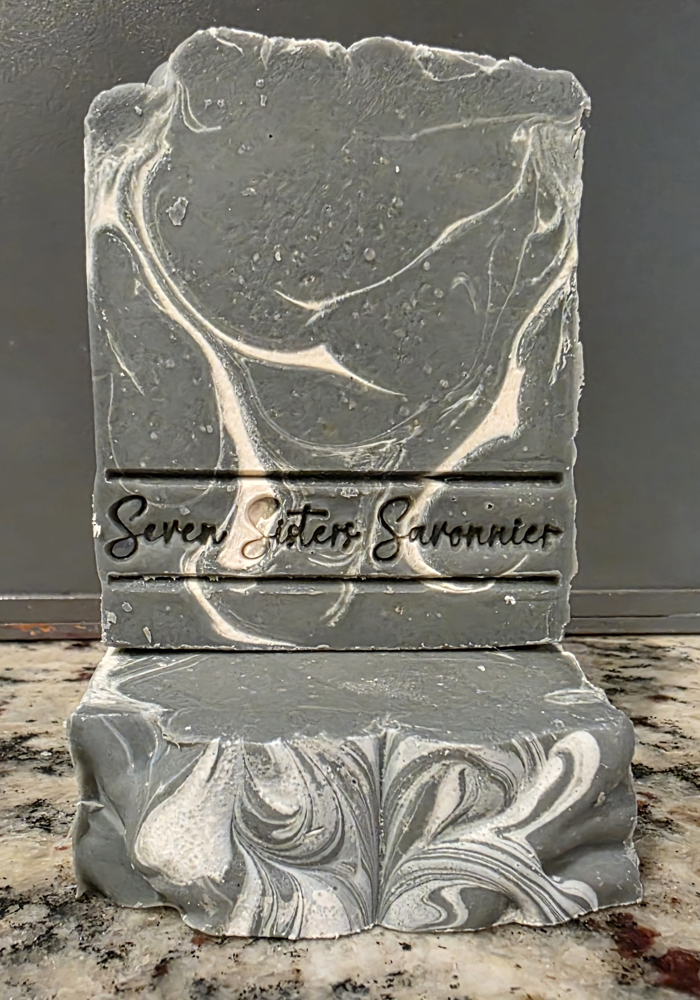
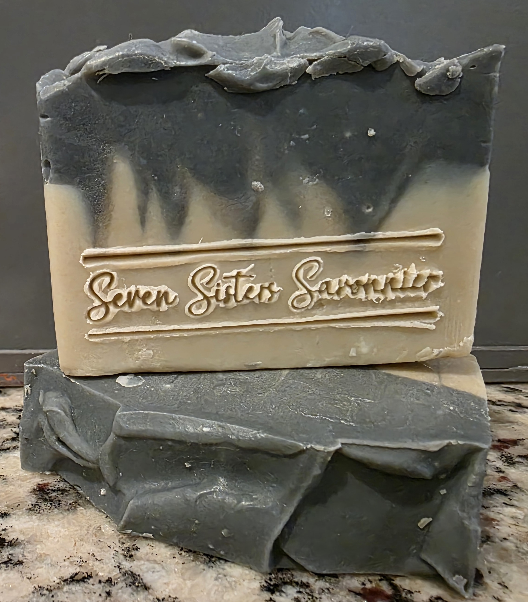
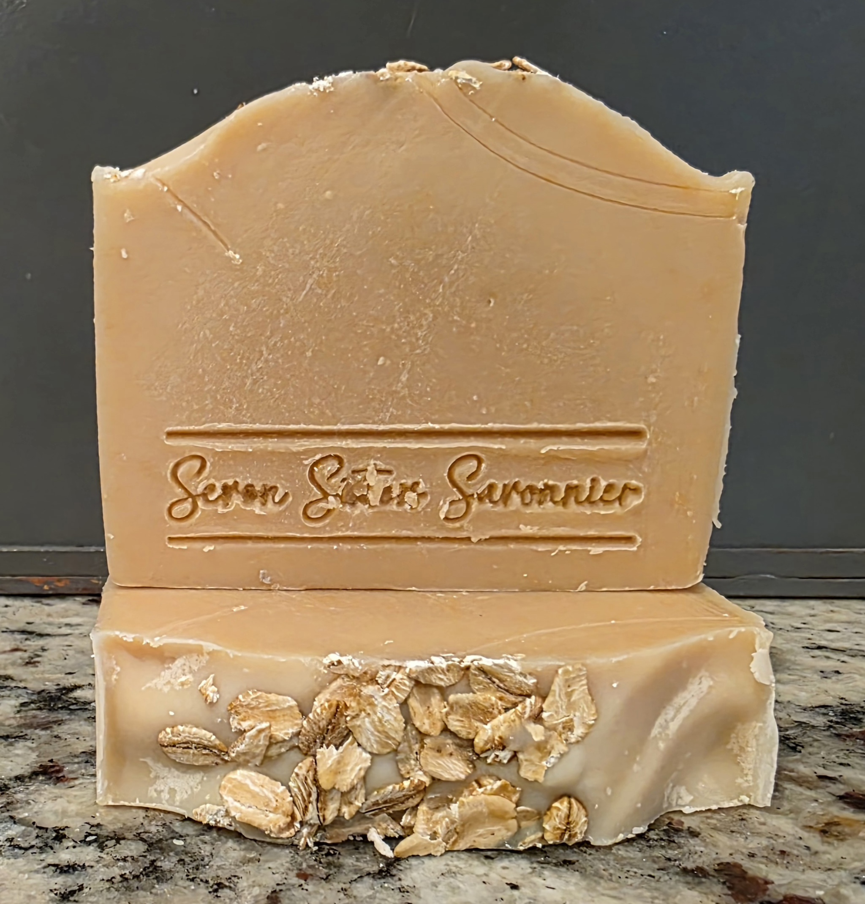
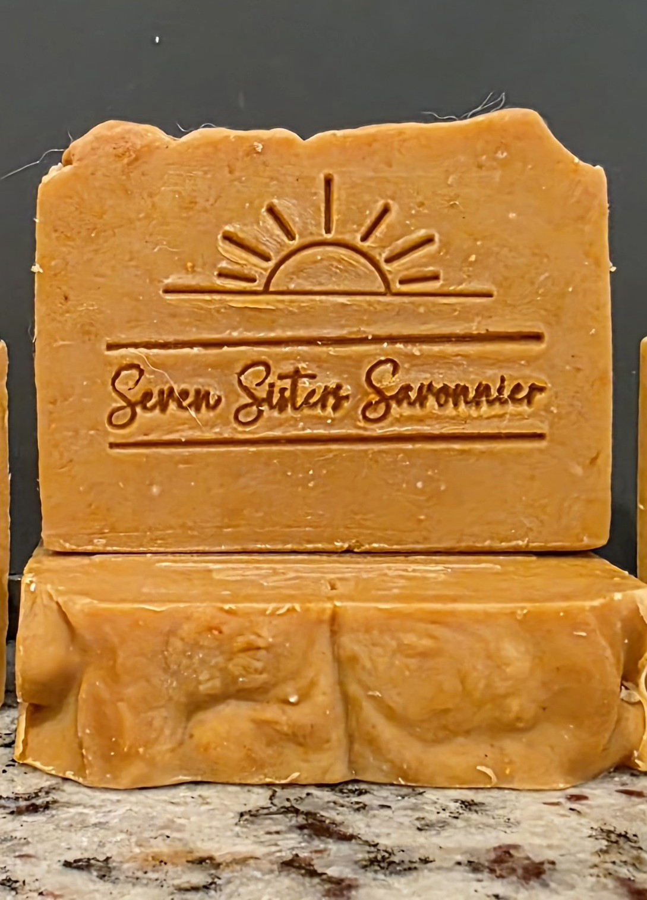
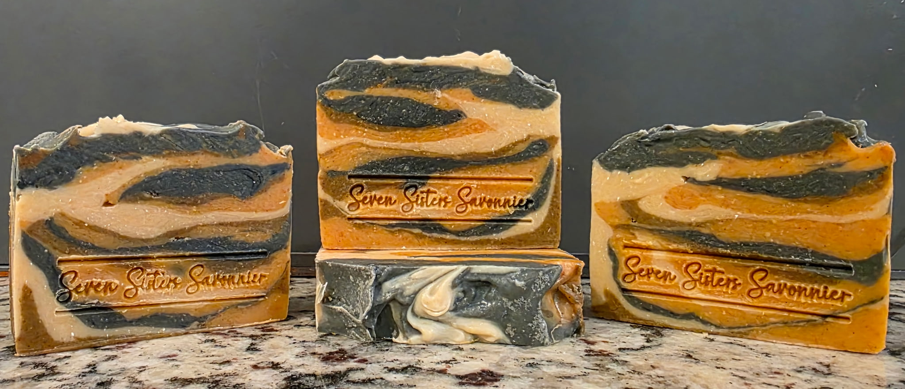

Spa Collection
A daily retreat for body and spirit, this collection is inspired by luxurious spas and wellness retreats. Mineral-rich clays, sea salt, activated charcoal, kojic acid, turmeric, and carefully blended essential oils create a cleansing experience that leaves skin feeling fresh, smooth, and renewed.

Moonstone
Elegant • Grounding • Indulgent
A luxurious charcoal spa bar, inspired by the quiet beauty of natural stone. Deep charcoal gray swirls with creamy white in a design reminiscent of moonstone, making every bar beautifully unique.
Activated charcoal is valued for its ability to help draw away excess oil and impurities from the skin, while kaolin clay adds a silky, gentle feel to the lather. A touch of sea salt contributes to a lovely, firm bar.
The fragrance is fresh, calming, and softly earthy—a balanced blend of bright bergamot, soothing lavender, warm cedarwood, and clean herbal tea tree. Moonstone is a little everyday escape.
Ingredients: Olive Oil, Coconut Oil, Lard, Water, Sodium Hydroxide, Goat Milk, Kaolin Clay, Sea Salt, Essential Oils (Bergamot, Lavender, Cedarwood, Tea Tree), Activated Charcoal, Titanium Dioxide, Rosemary oleoresin antioxidant.
$10.00

Charcoal and Dead Sea Clay
Earth • Sea • Spa Inspired
Activated charcoal creates a rich, dramatic layer while mineral-rich Dead Sea clay forms the creamy foundation, together producing a beautifully swirled bar inspired by the meeting of earth and sea.
Crafted with our signature blend of nourishing oils and enriched with creamy goat milk, this soap creates a luxurious lather that cleanses without leaving skin feeling stripped.
The refreshing aroma is a balanced blend of pure essential oils. Lavender offers soft floral notes, rosemary provides fresh herbal brightness, and tea tree contributes a clean, crisp finish for an invigorating bathing experience.
A little everyday escape inspired by earth and sea.
Ingredients: Olive Oil, Goat Milk, Coconut Oil, Lard, Sodium Hydroxide, Water, Essential Oils (Lavender, Rosemary, Tea Tree), Sea Salt, Dead Sea Clay, Activated Charcoal.
$10.00

Oatmeal, Milk, & Honey
Simple • Gentle • Nothing Extra
Oatmeal, Milk, & Honey is one of those soaps that proves simple can be something special. Made with our creamy goat milk recipe, this bar is left completely unscented and uncolored, allowing the naturally warm, honeyed tone of the soap to shine through.
There are no added fragrances, essential oils, or colorants—just a straightforward handcrafted goat milk soap with rosemary oleoresin added as an antioxidant. A sprinkling of oats across the top gives each bar a rustic finishing touch and a nod to this traditional favorite.
Its simplicity makes this an especially nice choice for anyone who prefers their soap without added scent or colorants.
Ingredients: Olive Oil, Coconut Oil, Lard, Goat Milk, Sodium Hydroxide, Water, Honey, Colloidal Oatmeal, Rosemary Oleoresin Antioxidant.
$10.00
The Wild and Golden Duo
Two personalities. One luxurious cleansing experience.
From the sunlit elegance of Matin Acadien to the bold beauty of La Tigresse, discover two distinctive handcrafted goat milk soaps featuring turmeric, kojic acid, and kaolin clay. Inspired by nature, crafted with care, and designed to make everyday bathing feel extraordinary.

Matin Acadien
Warm • Radiant • Beautifully Acadian
Inspired by the golden warmth of a Louisiana sunrise, Matin Acadien captures the quiet beauty of a new day in Acadiana. This handcrafted goat milk soap combines turmeric, kojic acid, and kaolin clay in a beautifully golden bar, finished with a rising sun design.
Bright citrus notes of orange and bergamot mingle with warm cedarwood, creating a fresh, inviting fragrance. Crafted with creamy goat milk, golden turmeric, kojic acid, and silky kaolin clay.
Formulated with kojic acid, an ingredient prized in skincare, this luxurious bar is designed to leave skin feeling clean, refreshed, and radiant.
Ingredients: Olive Oil, Coconut Oil, Lard, Goat Milk, Sodium Hydroxide, Water, Essential Oils (Folded Orange, Bergamot, Cedarwood), Kojic Acid Powder, Turmeric Powder, Kaolin Clay.
$10.00

La Tigresse
A Little Wild • A Lot Luxurious
Beautifully Bold. Unapologetically Wild.
Inspired by the strength, grace, and untamed beauty of the tigress, La Tigresse is a striking handcrafted goat milk soap with a personality all its own. Dramatic swirls of creamy ivory, golden turmeric, and deep activated charcoal create a distinctive tiger-striped design, making every bar a little work of art.
An alluring blend of bergamot, patchouli, cedarwood, and ylang ylang brings together bright citrus, warm woods, and soft floral notes for a sophisticated, captivating fragrance. Made with rich goat milk, golden turmeric, activated charcoal, and kaolin clay. Formulated with kojic acid, an ingredient prized in skincare, this striking bar combines a creamy lather with a luxurious cleansing experience that leaves skin feeling fresh and beautifully pampered.
Ingredients: Olive Oil, Coconut Oil, Lard, Goat Milk, Sodium Hydroxide, Water, Essential Oils (Bergamot, Patchouli, Cedarwood, Ylang Ylang), Kaolin Clay, Kojic Acid Powder, Activated Charcoal, Turmeric Powder.
$10.00